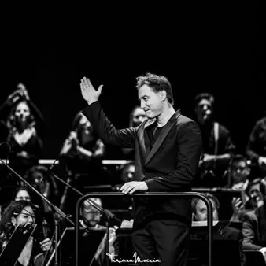

gio 5 nov · dalle 20:45
Rinascita
Concerto di musica facente parte della Stagione di prosa, musica e danza 2026-2027 del Teatro Adelaide Ristori di Cividale del Friuli
 Indicazioni
Indicazioni
- Costi e prenotazioni
- Costo non indicato · Prenotazione non indicata
- Programma
- Programma da verificare. Apri la fonte ufficiale per orari e possibili aggiornamenti.
- In caso di maltempo
- Nessuna indicazione specifica pubblicata.
- Note
- Acquisito automaticamente dalla fonte.
L’EVENTO
Descrizione completa
Rinascita propone un viaggio sonoro ed emotivo che trasforma il dolore in speranza, celebrando la forza dell’animo umano capace di rialzarsi da ogni maceria. Dalle atmosfere mistiche di Flower in the Desert di Cristian Carrara, un’opera che, dipingendo un deserto pronto a fiorire, si fa metafora universale di rinascita e attesa fiduciosa, passiamo per lo struggente lirismo del celebre Adagio per archi di Samuel Barber, un brano dalla monumentale arcata espressiva ispirato alle Georgiche di Virgilio, dove la tensione drammatica culmina in un silenzio improvviso per poi ripiegare in una pura evocazione umanistica della memoria, concludendo con i brani più significativi dell’ Opera Musical 55 secondi , firmata da Fiorenza Cedolins e Cristian Carrara per commemorare il 50º anniversario del terremoto del Friuli nel 1976, dal linguaggio innovativo che fonde la tradizione lirica italiana e l’immediatezza del musical anglosassone, e richiamando giganti come Turoldo e Pasolini, per raccontare lo slancio orgoglioso della ricostruzione.
Rinascita unisce così queste tre straordinarie pagine musicali in un racconto corale e transnazionale, un cammino che parte dal ricordo e dalla commozione per approdare a un futuro di luce e feconda speranza. Direttore Principale della FVG Orchestra, Paolo Paroni continua ad alimentare consensi a livello internazionale. Primo Direttore Ospite dell’orchestra barocca Capella Savaria dal 2000 al 2006, Direttore Ospite Principale del New York City Ballet dal 2014 al 2017, Paroni si è esibito con orchestre di massimo rilievo, tra cui la Filarmonica Slovena di Lubiana, la Filarmonica di Zagabria, l’Orchestra della Radio Nazionale Bulgara, le orchestre dei Teatri Lirici di Bologna, Cagliari, Catania, Trieste, la Pannon Philharmonic, l’Orchestra della RTV Croata. È apparso in sale da concerto quali il Lincoln Center di New York, Müpa di Budapest, Tonhalle di Düsseldorf, Teatro Comunale di Bologna, Stadt-Casino Concert Hall di Basilea, Kodály Concert Hall di Pécs, Teatro Bellini di Catania, Bulgaria Concert Hall di Sofia, Teatro Lirico di Cagliari, Lisinski Center di Zagabria. Ha collaborato con solisti del calibro di Stefan Milenkovich, Teresa Berganza, Altenberg Trio Wien, ètoiles del Bolshoi, Mariinskij, Royal Ballet, artisti crossover quali The Swingle Singers, Janoska Ensemble, Richard Galliano, jazzisti quali Kenny Wheeler, esponenti della World Music, strumentisti rock e musicisti mediorientali. Paolo Paroni ha studiato Composizione Principale e Organo, conseguendone il diploma a pieni voti. Ha poi completato gli studi di direzione nella classe di Uroš Lajovic presso la Hochscule für Musik und Darstellende Kunst di Vienna, dove si è diplomato cum laude. La FVG Orchestra, nata nel 2019 per volontà della Regione Friuli Venezia Giulia, raccoglie l’eredità musicale di un territorio di confine ricco di tradizioni. Riconosciuta nel 2022 dal Ministero della Cultura come Nuove ICO, nel 2024 ha ottenuto il punteggio più alto nazionale tra le Orchestre Territoriali, confermandosi prima in graduatoria anche nell’anno 2026. Collabora con i maggiori concorsi della Regione, risultando protagonista di rinomati festival e tournée internazionali. La compagine si distingue per l’eccezionale versatilità, affrontando con successo il grande repertorio classico, spaziando fino alla musica contemporanea, pop e jazz. Ha all’attivo collaborazioni con artisti internazionali quali Stewart Copeland, Simone Cristicchi, Alice, Dee Dee Bridgewater, Riccardo Cocciante, e con solisti come Mario Brunello, Alexander Lonquich, Steven Isserlis, Sergej Krylov, Giovanni Sollima. Tra i direttori ospiti ricordiamo Roberto Abbado, Nicola Piovani, Beatrice Venezi. Il ruolo di Direttore Principale è affidato al M° Paolo Paroni, affiancato dal Direttore Ospite Principale, M° Florian Krumpöck. Cristian Carrara è considerato uno dei compositori più originali della sua generazione. La sua musica è stata apprezzata per una scrittura “estremamente attenta all’equilibrio e alla delicatezza della sua tessitura armonica”, pur essendo allo stesso tempo “grande nell’intenzione creativa” (Claudio Strinati). Anche altri critici hanno lodato il suo lavoro: “La sua musica è vicina al cuore, è chiara ma non semplice, è diretta ma parla una lingua ricca di mistero: quella della poesia” (Elena Formica); “Questo è un compositore con una vera facilità di scrittura” (Giorgio Battistelli); “So che mi piacerebbe condividere la sua musica con gli altri e ascoltarla ancora e ancora” (Rob Haskins); “A differenza di molta musica di oggi, la sua qualità enigmatica non risiede nelle note stesse, ma nella sfida di organizzare e rendere il pensiero compositivo il più chiaro possibile, qualcosa che ricorda la musica di Verdi” (Flavio Emilio Scogna). Carrara ha lavorato con molte figure di spicco della scena mondiale, tra cui John Neschling, Omer Meir Wellber, Nir Kabaretti, Lior Shambadal, Roberto Prosseda, Francesca Dego e Danusha Waskiewicz. Ha inoltre collaborato con ensemble prestigiosi come la London Philharmonic Orchestra, la Filarmonica Arturo Toscanini (Parma), l’Orchestra della Toscana, l’Orchestra del Maggio Musicale Fiorentino, l’Orchestra del Teatro Lirico di Cagliari, l’Orchestra del Teatro Petruzzelli (Bari), la Filarmonica della Fenice, la Qatar Philharmonic Orchestra, i Berliner Symphoniker, la Slovenian Philharmonic Orchestra, la Santa Barbara Symphony, l’Orquesta Filarmónica de la UNAM (Città del Messico) e l’Orquestra Sinfônica Municipal (San Paolo).
BIGLIETTI: Platea interi € 25,00
Platea ridotti € 22,00
Platea under 25 € 17,00 Galleria interi € 22,00
Galleria ridotti € 20,00
Galleria under 25 € 15,00 Riduzioni: over 65, under 25 anni, abbonati a una Stagione ERT. PREVENDITA : Online da lunedì 19 ottobre su ertfvg.it.
in teatro, il giorno prima dello spettacolo dalle 17 alle 19 e la sera dello spettacolo dalle 20. Teatro A. Ristori tel. 0432 731353; mail: teatroristori@cividale.net (il giorno stesso dello spettacolo)
Acquista il biglietto online: qui
IL PROGRAMMA
Programma e orari
Appuntamenti raccolti dalle fonti elencate. Dove manca un orario, non è ancora disponibile in questa scheda.
Programma pubblicato
- Dal 2026-11-05 al 2026-11-05
INFORMAZIONI UTILI
Prima di partire
- Controllare la fonte prima di partire.
ORGANIZZAZIONE